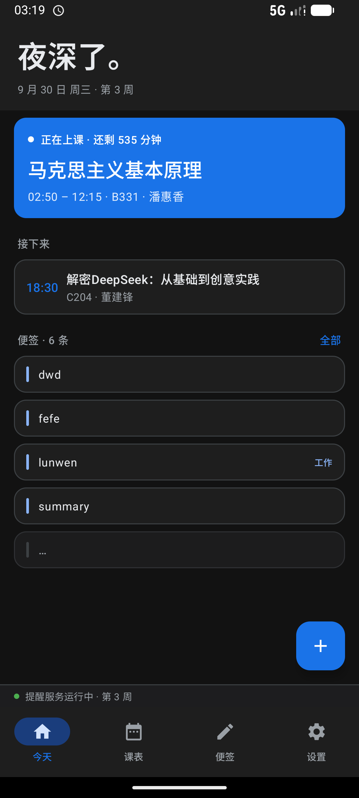
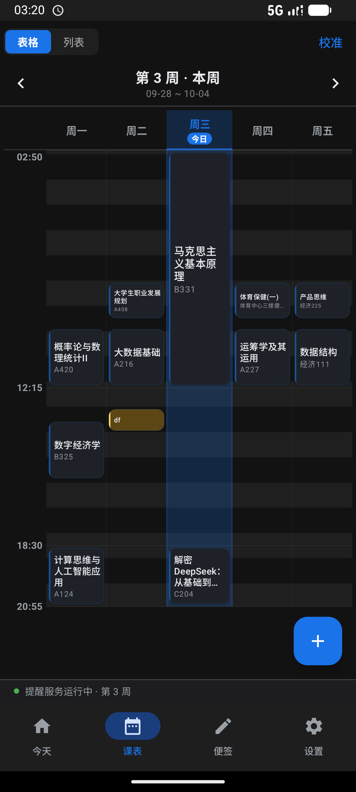
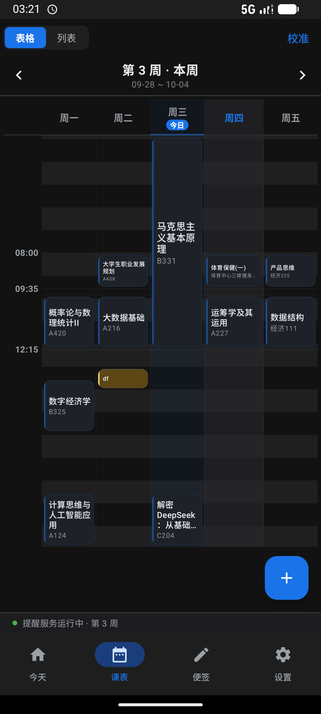
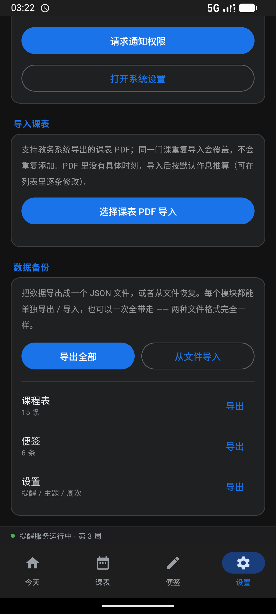
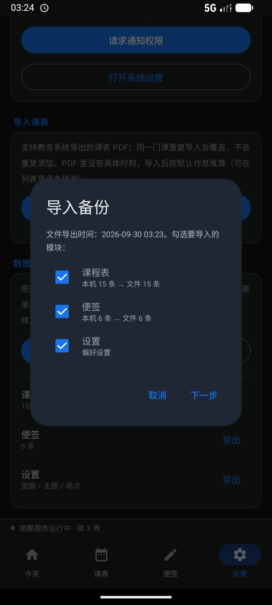
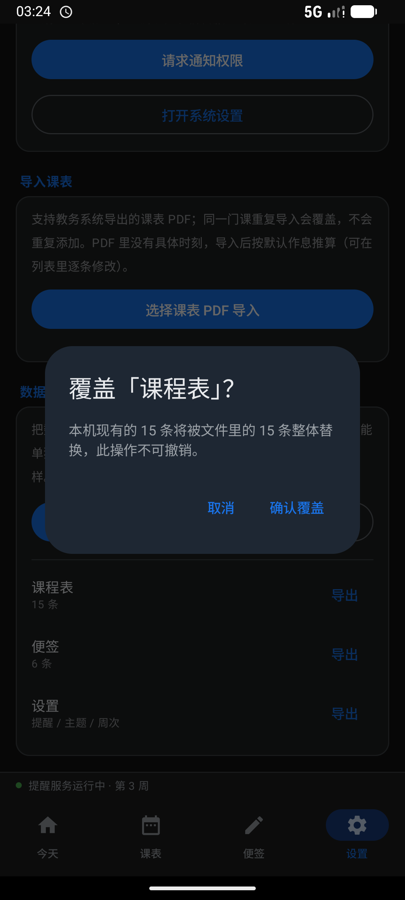
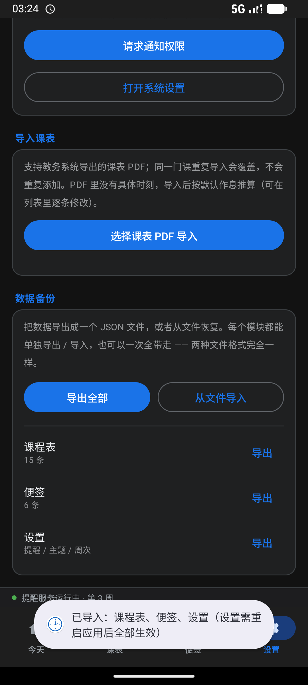
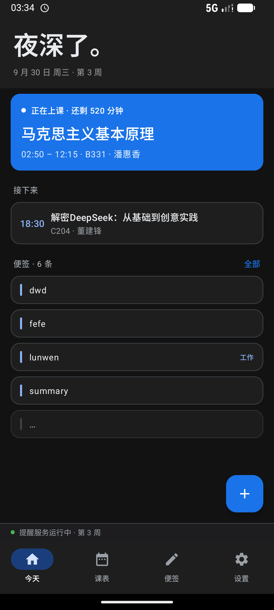
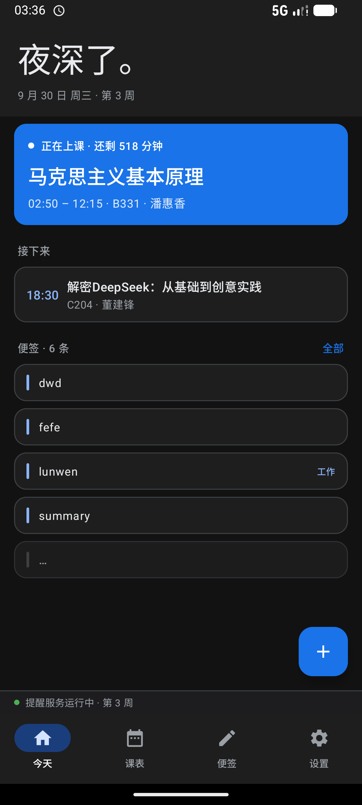

左「改动前」、右「改动后」。周三 = 今天（主色高亮），周五 = 手动点列头高亮（中性灰）， 周一的课块是「选中」态。深色下原来的非今日列 α0.85 几乎铺成一块实心色， 把课程块压了下去；这一版整体调淡，同时今日列的主色换成深色 Google Blue。
原来深色走 Google 官方深色那套提亮版 #8AB4F8，与浅色的 #1A73E8 不是同一支蓝。
现在深浅统一用 #1A73E8。代价是对比度下降，所以主色只用于高亮块、图标、按钮底、色条，不用来写正文。
#8AB4F8（Google Blue 200）#121212 对比度 7.4 : 1#1E1E1E 7.0 : 1#1A73E8（Google Blue 600）#121212 对比度 4.2 : 1#1E1E1E 3.8 : 1设置页新增区块。三个模块各自独立：能单独导出，也能整体导出；导入时逐模块勾选，且每个模块都要单独确认一次覆盖。
像素采样与上面的常量逐一吻合：今日列描边 rgb(20,39,65) = #1A73E8 α0.22 叠在 #121212 上
（若还是旧值，应是 rgb(59,73,96)）；非今日列 rgb(31,31,33) = surfaceVariant α0.52
（旧 α0.85 会是 rgb(38,39,42)）。点列头能正常切换高亮，边缘描边随之出现 / 消失。

#1A73E8





深色主色 #1A73E8 压在深色卡片上只有 3.8:1，做小字号会发闷。两处分别处理：
时间用浅色 Google Blue（保住品牌蓝、又不发闷），导航选中项用白（那里已经有深蓝胶囊托着，白色最干净）。
浅色模式都不受影响，仍是主色。
18:30 = rgb(138,180,248)，与 #8AB4F8 色距 0；底部「今天」= 纯白| 位置 | 浅色 | 深色 | 代码 |
|---|---|---|---|
| 今天页「接下来」的时间 | #1A73E8 | #8AB4F8 浅色 Google Blue | GoogleBlueLight |
| 底部导航选中项文字 | #1A73E8 | 白 | selectedTextColor |
GoogleBlueLight 是这一版新加在 Theme.kt 里的**命名色值** ——
深色下「需要品牌蓝、但字号小」的地方统一用它，不要再各自硬编码。
未改动的对照：底部导航的图标仍是 onPrimaryContainer（深色 #D3E3FD），
便签区的「全部」链接仍是主色。
首屏那句「夜深了。」是唯一一句「有人味」的话。先加大到 38sp（Material 的 displaySmall 是 36sp，这里刻意压过一格）；
随即发现 38sp 配 SemiBold 偏笨重 —— 这个尺寸已经靠字号本身撑起气势了，于是字重改走 Light，
更接近 Google 首屏那种「轻但醒目」的调子。行高同步 42 → 46sp，顶栏内边距不动。
40sp 是上限：「早上好。」四个字在 360dp 窄屏上就该折行了。


| 位置 | 浅色 | 深色 旧 → 新 | 常量名 |
|---|---|---|---|
| 今日列选中底 | 0.14 | 0.34 → 0.22 | TINT_ALPHA_TODAY_* |
| 非今日列选中底 | 0.75 | 0.85 → 0.52 | TINT_ALPHA_OTHER_* |
| 今日列常态弱底 | 0.035 | 0.07 → 0.05 | TODAY_BASE_TINT_* |
| 悬停整列 | 0.022 | 0.05 → 0.04 | HOVER_TINT_ALPHA_* |
| 列描边（今日 / 非今日） | 0.30 / 0.55 | → 0.26 / 0.42 | EDGE_ALPHA_TODAY / _OTHER |
| 课程块选中底 | 0.12 | 0.22 → 0.15 | （GridCell 内联） |
| 课程块选中光晕 | 0.17 | 0.30 → 0.24 | （GridCell 内联） |
| 深色主色 | #1A73E8 | #8AB4F8 → #1A73E8 | DarkColors.primary |
表头与列身共用同一组常量（MainScreen.kt 顶部），改一处两边同时生效 ——
原来两边各自硬编码，改一处漏一处就会出现「表头和列身深浅对不上、整列头重脚轻」。